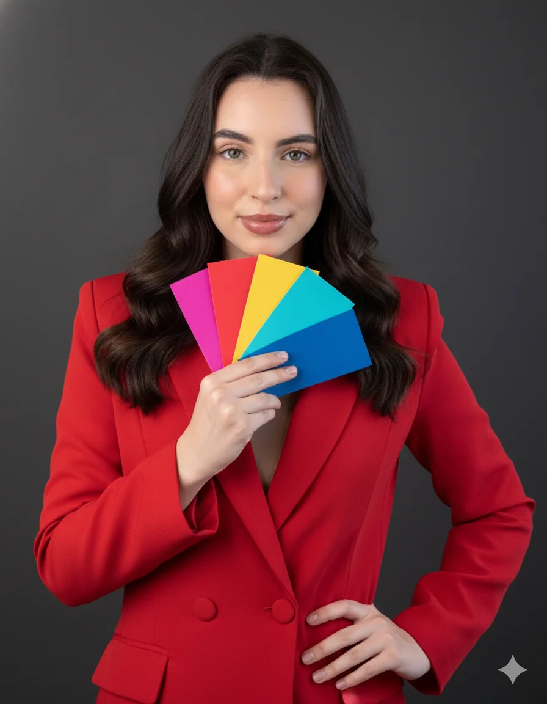

Sua cartela ideal não te limita, ELA TE LIBERTA!
Reels
✨ Consultoria de Imagem Personalizada
IMAGEM ALINHADA, COMEÇA PELAS CORES CERTAS
Descubra as cores que mais valorizam você com uma análise de coloração pessoal digital completa e personalizada.

Análise Completa
Paleta personalizada
⭐ Coloração pessoal